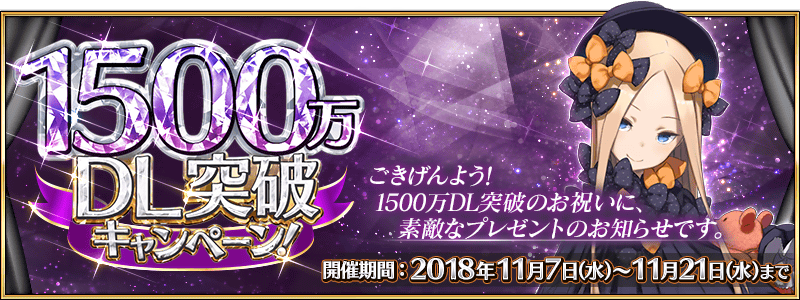
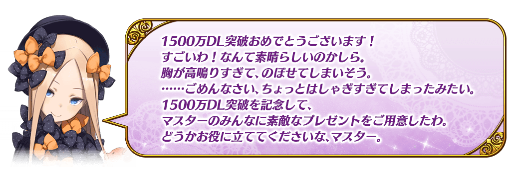
◆舉辦期間◆
2018年11月7日(三) 17:00～11月21日(三) 11:59
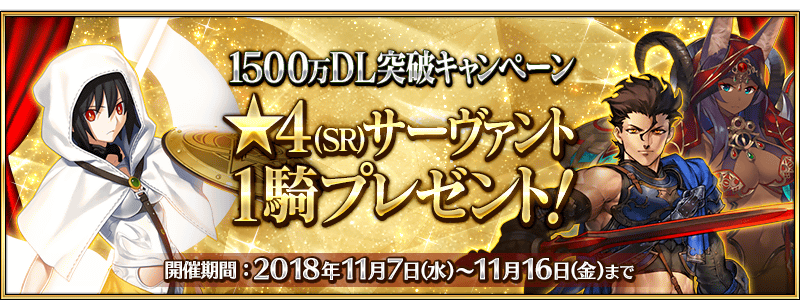
在下述的配布期間中登入的話，贈送1張可從對象★4(SR)Servant全54位之中，選擇喜愛1位交換的「1500萬DL記念券」！
◆「1500萬DL記念券」配布期間◆
2018年11月7日(三) 17:00～11月14日(三) 11:59
※「1500萬DL記念券」即使未通過「特異點F 炎上汙染都市 冬木」在配布期間內只登入的話也可入手。
※請注意超過上述的配布期間的話「1500萬DL記念券」無法領取。
◆於達文西工房的交換條件◆
2018年11月16日(五) 11:59前通過「特異點F 炎上汙染都市 冬木」的Master對象
◆「1500萬DL記念券」交換期間◆
2018年11月9日(五) 17:00～11月16日(五) 11:59
※請注意「1500萬DL記念券」可在達文西工房點擊以期間限定顯示的活動橫幅後，交換贈送對象Servant。未滿足交換條件的情況和超過交換期間的話無法交換。
◆有關票券的注意◆
※請注意「1500萬DL記念券」配布期間與交換期間有所差異。
※交換後的★4(SR)Servant會送至禮物箱，「1500萬DL記念券」消失。
※請注意就算未交換的情況，在交換期間結束後「1500萬DL記念券」也會消失。
◆有關Servant的注意◆
※在對象Servant未包含間限定Servant及活動報酬的Servant。
※關於真名尚未判明的Servant，透過主線關卡的進行會讓Servant的名稱變化。
※阿爾托莉亞・潘德拉剛〔Alter〕(Saber)、高文、尼祿・克勞狄烏斯(Saber)、柳生但馬守宗矩、Emiya〔Alter〕、崔斯坦、阿爾托莉亞・潘德拉剛〔Alter〕(Lancer)、李書文、湯瑪斯・愛迪生、米德拉什的Caster、美狄亞〔Lily〕、加藤段藏、戈爾貢就算通過章節前也能交換。
◆贈送對象Servant◆
| 職階 | Servant名 |
|---|---|
| Saber | 阿爾托莉亞・潘德拉剛〔Alter〕、高文、齊格飛、夏爾・德翁、鈴鹿御前、迪爾姆德・奧德利暗、尼祿・克勞狄烏斯、柳生但馬守宗矩、羅摩、蘭斯洛特 |
| Archer | Archer・地獄、阿塔蘭塔、Emiya、Emiya〔Alter〕、凱隆、崔斯坦 |
| Lancer | 阿爾托莉亞・潘德拉剛〔Alter〕、弗拉德三世〔EXTRA〕、伊莉莎白・巴托里、哪吒、帕爾瓦蒂、芬恩・麥克庫爾、美杜莎、李書文、瓦爾基里 |
| Rider | 阿斯托爾福、安妮・伯妮＆瑪莉・瑞德、瑪莉・安東尼、瑪爾大 |
| Caster | 海倫娜・布拉瓦茨基、俄刻阿諾斯的Caster、吉爾伽美什、湯瑪斯・愛迪生、童謠、尼托克里絲、米德拉什的Caster、美狄亞〔Lily〕 |
| Assassin | Assassin・樂園、Emiya〔Assassin〕、卡米拉、加藤段藏、新宿的Assassin、絲西娜、不夜城的Assassin |
| Berserker | 阿塔蘭塔〔Alter〕、茨木童子、黃金國的Berserker、玉藻貓、弗蘭肯斯坦、貝奧武夫、海克力斯、蘭斯洛特 |
| Avenger | 戈爾貢、新宿的Avenger |
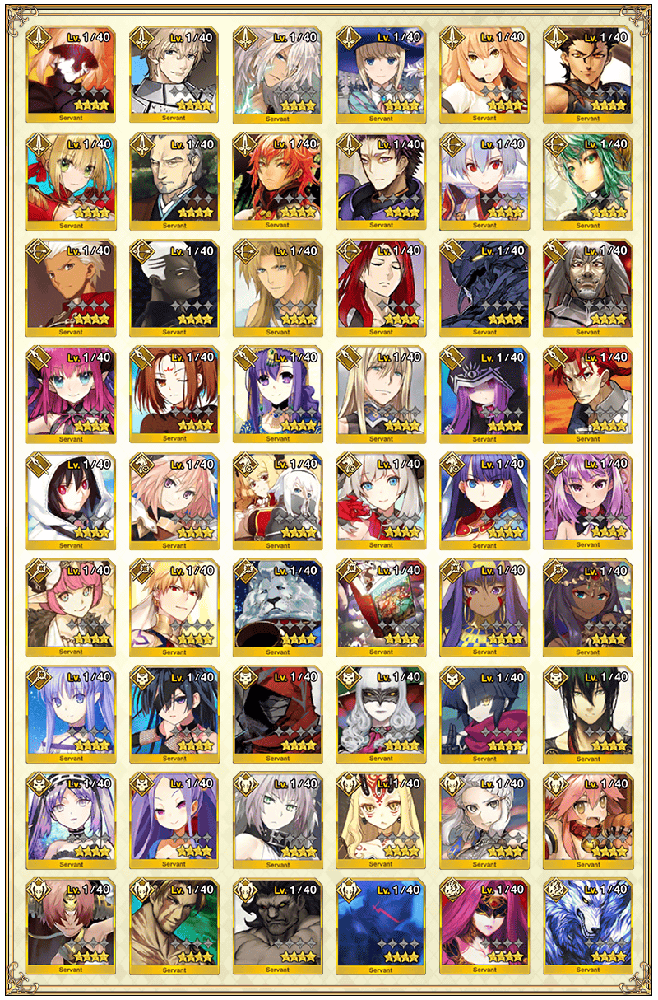

在官方推特上方固定顯示的「1500萬DL突破宣傳活動舉辦！從對象★4(SR)Servant之中獲得喜愛的1位！」推特的轉推數，於下述的期間內達成10萬轉推的話，對遊玩遊戲的所有Master贈送豪華報酬！
本次為了記念1500萬DL突破贈送聖晶石召喚10次份的聖晶石30個！
「Fate/Grand Order」官方推特:@fgoproject
◆贈送對象◆
所有的Master對象
※新Master玩家必須推進通過至「特異點F 炎上汙染都市 冬木 第3節」。
◆舉辦期間◆
2018年11月6日(二) 官方推特上的推特刊載後～11月7日(三) 22:59
◆配布預定日◆
2018年11月8日(四) 17:00～11月16日(五) AM2:59前的期間中，在初次進行登入的時間點，贈送至禮物箱。
※期間內未登入的話無法領取。
※禮物只能領取1次。
※在舉辦期間內達成10萬轉推的情況，新Master玩家必須在做為配布預定最終日的11月16日(五) AM2:59前，推進通過至「特異點F 炎上汙染都市 冬木 第3節」。
| 達成目標(轉推數) | 達成報酬 | |
|---|---|---|
| 【已達成】10萬轉推 | 1500萬DL突破記念 聖晶石30個 | |

為了記念「1500萬DL突破宣傳活動」舉辦，實施連續登入獎勵。
在下述期間中，7天內連續登入的話，贈送呼符10張(聖晶石召喚10次份)等豪華報酬！
◆舉辦期間◆
2018年11月8日(四) AM3:00～11月15日(四) AM2:59
◆贈送對象◆
2018年11月14日(三) AM2:59前「特異點F 炎上汙染都市 冬木」通過的Master對象
| 連續登入天數 | 贈送內容 | |
|---|---|---|
| 第1天 | 白銀果實 10個 | |
| 第2天 | 黃金果實 10個 | |
| 第3天 | 叡智的猛火ALL★4(SR) 10張 | |
| 第4天 | 1,000萬QP | |
| 第5天 | 英靈結晶・星之芙芙ALL★3(HP) 10張 | |
| 第6天 | 英靈結晶・太陽之芙芙ALL★3(ATK) 10張 | |
| 第7天 | 呼符 10張(聖晶石召喚10次份) | |
※第1天的登入獎勵會從11月8日(四) AM3:00配發。
※之後的登入獎勵會在每天AM3:00配發。
※連續登入天數中斷的話，無法領取之後的禮物。
※最多能領取7次，但根據成為贈送對象的時間點，可能無法到此上限。
※上述時間前，在管理室(ターミナル)畫面的關卡橫幅必須要有「CLEAR」的文字顯示。
可強化Servant的新經驗值卡「叡智的業火★5(SSR)」新登場。
「叡智的業火★5(SSR)」是可獲得比「叡智的猛火★4(SR)」更多經驗值的卡。
◆實装時間◆
2018年11月7日(三) 17:00～
◆新經驗值卡「叡智的業火★5(SSR)」◆

另外，為了記念「叡智的業火★5(SSR)」的登場，實施特別登入獎勵。
在下述期間中登入的話贈送叡智的業火ALL★5(SSR) 10張！
敬請活用做為同時舉辦「Servant強化＆概念禮裝強化的大成功・極大成功率以期間限定變2倍！」的宣傳活動。
◆舉辦期間◆
2018年11月7日(三) 17:00～11月14日(三) 11:59
◆贈送內容◆
叡智的業火ALL★5(SSR) 10張
◆贈送對象◆
2018年11月14日(三) AM3:59前通過「特異點F 炎上汙染都市 冬木」的Master對象
※上述時間前，在管理室(ターミナル)畫面的關卡橫幅必須要有「CLEAR」的文字顯示。
※2018年11月7日(三) 17:00～11月14日(三) 11:59的期間中，在初次進行登入的時間點，贈送至禮物箱。
※期間內未登入的話無法領取。
※禮物只能領取1次。
經驗值卡「叡智的業火★5(SSR)」與「叡智的猛火★4(SR)」會從「友情點數召喚」以低機率被抽出。
◆追加時間◆
2018年11月7日(三) 17:00～
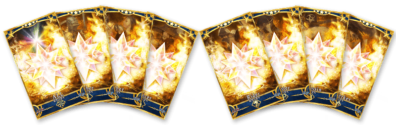
主線關卡第1部的AP消耗量以期間限定變成1/4、主線關卡第2部的AP消耗量以期間限定變成1/2！
尚未通過至主線關卡第1部和主線關卡第2部的Master，敬請活用這機會！
◆舉辦期間◆
2018年11月7日(三) 17:00～11月21日(三) 11:59
◆對象關卡◆
主線關卡第1部(從特異點F到終局特異點)
主線關卡第2部(從Lostbelt No.1到Lostbelt No.2)
※請注意第1部、第2部的自由關卡為對象外。
※強化關卡、幕間物語、曜日關卡為對象外。
※在戰鬥中撤退的情況AP的消耗也是1/4或1/2。
今後，也預定在期間限定活動和期間限定宣傳活動中，會有將通過主線關卡第1部設為開放條件的情況。 如果活用本宣傳活動推進主線關卡的攻略會有所幫助。
下述的期間中，在「Master任務」的「限定」標籤內以期間限定追加「【1500萬DL突破記念】任務」。
通過所有任務的話，可得到最多10個(聖晶石召喚3次份)的聖晶石與指令紋章「★3(R)愛の狩人」！
◆舉辦期間◆
2018年11月7日(三) 17:00～11月21日(三) 11:59
◆領取期間◆
2018年11月7日(三) 17:00～11月28日(三) 11:59
◆1500萬DL突破記念限定指令紋章◆
| 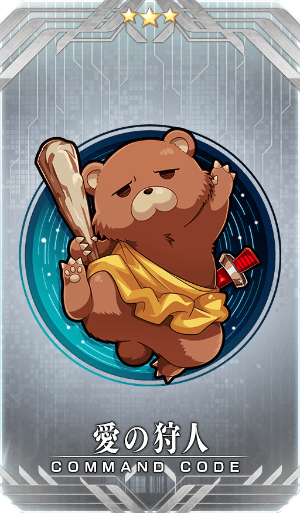 |
★★★R |
◆追加任務◆
| 任務名稱 | 任務達成報酬 |
|---|---|
| 【1500萬DL突破記念】
擊倒3名「骸骨兵(スケルトン)」系的敵人 |
聖晶石 1個 |
| 【1500萬DL突破記念】
擊倒3名「雙足飛龍(ワイバーン)」系的敵人 |
聖晶石 1個 |
| 【1500萬DL突破記念】
擊倒3名「石像(ゴーレム)」系的敵人 |
聖晶石 1個 |
| 【1500萬DL突破記念】
擊倒3名「蛇妖(ラミア)」系的敵人 |
聖晶石 1個 |
| 【1500萬DL突破記念】
擊倒3名「自動人偶(オートマタ)」系的敵人 |
聖晶石 1個 |
| 【1500萬DL突破記念】
擊倒3名「守寶妖精(スプリガン)」系的敵人 |
聖晶石 1個 |
| 【1500萬DL突破記念】
擊倒3名「雙角獸(バイコーン)」系的敵人 |
聖晶石 1個 |
| 【1500萬DL突破記念】
擊倒3名「伊芙莉塔(イフリータ)」系的敵人 |
聖晶石 1個 |
| 【1500萬DL突破記念】
擊倒3名「魔豬」系的敵人 |
聖晶石 2個 |
| 【1500萬DL突破記念】
通過全部的任務 |
★3(R)愛の狩人 1枚 |
※請注意舉辦期間領取期間有所差異。
※請注意與每週日23:00更新的普通任務(Weekly)不同欄位，超過領取期間的話無法入手報酬。
※就算通過「【1500萬DL突破記念】任務」，也不會計算在普通任務(Weekly)的任務進行度。
在進行Servant及概念禮裝的強化時，大成功(經驗值2倍加成)・極大成功(經驗值3倍加成)發生機率以期間限定變成2倍！
無論如何藉此機會強化中意的Servant和概念禮裝吧！
◆舉辦期間◆
2018年11月7日(三) 17:00～11月14日(三) 11:59
對所有的Master對象，無論Master等級，擴張「好友數」追加10欄位。
敬請活用做為同時舉辦「所有主線關卡的友情點數獲得量期間限定變4倍！」的宣傳活動。
◆實施時間◆
2018年11月7日(三) 17:00～
下述的期間中，所有的主線關卡的友情點數獲得量變成4倍。
將好友和其他Master做為支援能選擇Servant和概念禮裝的編成列入考量，藉此機會入手更多友情點數吧！
※選擇NPC Servant做為支援Servant的情況也有友情點數獲得量4倍。
◆舉辦期間◆
2018年11月7日(三) 17:00～11月14日(三) 11:59
◆對象關卡◆
主線關卡第1部(從特異點F到終局特異點)
主線關卡第1.5部(從亞種特異點Ⅰ到亞種特異點Ⅳ)
主線關卡第2部(從Lostbelt No.1到Lostbelt No.2)
※請注意第1部、第1.5部、第2部的自由關卡為對象外。
※強化關卡、幕間物語、曜日關卡為對象外。
以期間限定在達文西工房的「魔力稜鏡交換」追加下述的概念禮裝及道具。
◆魔力稜鏡交換＆期間限定概念禮裝◆
 |
★★★★★SSR |
◆概念禮裝交換期間◆
2018年11月7日(三) 17:00～2019年1月31日(四) 22:59
| 追加道具 | 能交換 次數 |
1次交換所需的 魔力稜鏡數 |
|---|---|---|
| 【期間限定】 ★5(SSR)カルデア・ティータイム | 5次 | 1000個 |
◆道具交換期間◆
2018年11月7日(三) 17:00～
11月14日(三) 11:59
| 追加道具 | 能交換 次數 |
1次交換所需的 魔力稜鏡數 |
|---|---|---|
| 【期間限定】Quick・Code・Opener | 3次 | 100個 |
| 【期間限定】Arts・Code・Opener | 3次 | 100個 |
| 【期間限定】Buster・Code・Opener | 3次 | 100個 |
| 【期間限定】呼符 | 5次 | 20個 |
| 【期間限定】叡智的猛火ALL★4(SR)10張組 | 5次 | 40個 |
| 【期間限定】英靈結晶・星之芙芙ALL★3(HP) | 20次 | 15個 |
| 【期間限定】英靈結晶・太陽之芙芙ALL★3(ATK) | 20次 | 15個 |


以期間限定在達文西工房的「稀有稜鏡交換」追加下述的道具。
◆道具交換期間◆
2018年11月7日(三) 17:00～
11月14日(三) 11:59
| 追加道具 | 能交換 次數 |
1次交換所需的 稀有稜鏡數 |
|---|---|---|
| 【期間限定】Code・Remover | 3次 | 1個 |
| 【期間限定】傳承結晶 | 1次 | 5個 |
| 【期間限定】英靈結晶・流星之芙芙ALL★4(HP) | 1次 | 3個 |
| 【期間限定】英靈結晶・日輪之芙芙ALL★4(ATK) | 1次 | 3個 |
| 【期間限定】友情點數 20,000pt | 5次 | 1個 |
對一定期間未登入的Master對象，以期間限定舉辦「回歸登入獎勵！」。
在下述期間中，7天內連續登入的話，贈送合計聖晶石30個等豪華報酬！
◆贈送對象◆
①2018年10月1日(一) 23:00～11月6日(二) 17:59未登入的Master對象
②2018年11月14日(三) AM3:59前通過「特異點F 炎上汙染都市 冬木」的Master
※滿足①與②的Master對象
◆舉辦期間◆
2018年11月6日(二) 19:00～11月15日(四) AM3:59
| 連續登入天數 | 贈送內容 |
|---|---|
| 第1天 | 聖晶石 1個 友情點數 2,000pt 叡智的猛火 ALL★4(SR) 1張 黃金果實 1個 |
| 第2天 | 聖晶石 1個 友情點數 2,000pt 叡智的猛火 ALL★4(SR) 1張 黃金果實 1個 |
| 第3天 | 聖晶石 2個 友情點數 2,000pt 叡智的猛火 ALL★4(SR) 1張 黃金果實 1個 |
| 第4天 | 聖晶石 3個 友情點數 2,000pt 叡智的猛火 ALL★4(SR) 1張 黃金果實 1個 |
| 第5天 | 聖晶石 5個 友情點數 2,000pt 叡智的猛火 ALL★4(SR) 1張 黃金果實 1個 |
| 第6天 | 聖晶石 8個 友情點數 2,000pt 叡智的猛火 ALL★4(SR) 1張 黃金果實 1個 |
| 第7天 | 聖晶石 10個 友情點數 2,000pt 叡智的猛火 ALL★4(SR) 10張 黃金果實 10個 |
※第1天的回歸登入獎勵會在11月6日(二) 18:00以後配發。
※之後的的回歸登入獎勵會在每天AM3:00配發。
※連續登入天數中斷的話，無法領取之後的禮物。
※最多能領取7次，但根據開始遊戲的時間點，可能無法到此上限。
追加就算於文字冒險部份的進行途中結束程式，在下次再起動時，也可從文字冒險部份的結束結束的地方重新開始的功能。
※請注意文字冒險部份的途中回歸，從本功能實施後適用。在適用前途中結束的文字冒險部份無法途中回歸。
◆追加時間◆
2018年11月7日(三) 17:00～
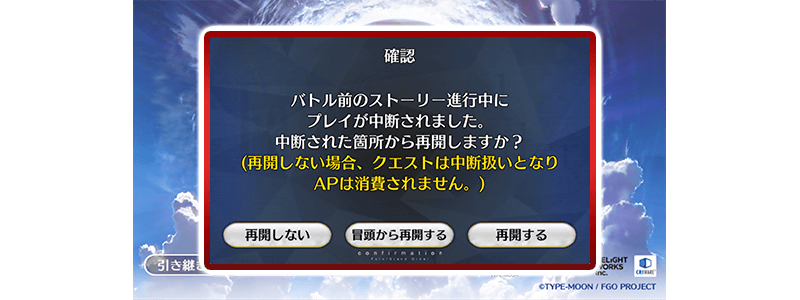
※依照關卡的進行度對話框的文字會有變化。
文字冒險部份中訊息視窗的文字顯示速度，變得可於遊戲設定裡設定。
數值越大的話文字顯示速度上昇。
◆追加時間◆
2018年11月7日(三) 17:00～
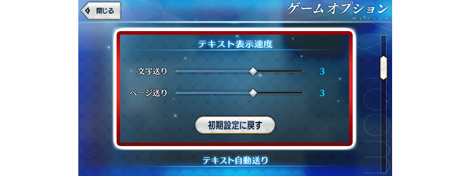
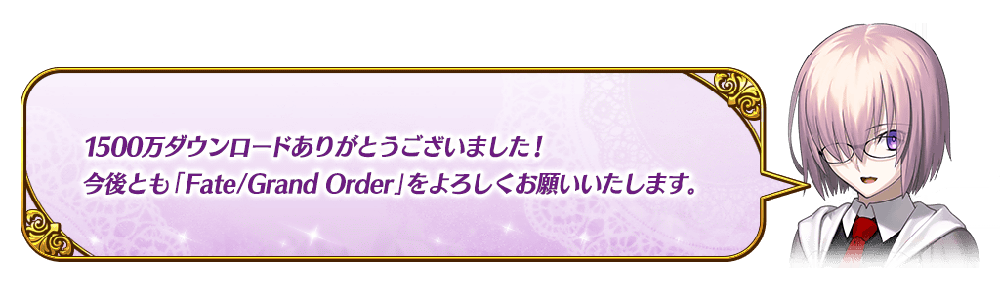
◆「1500萬DL記念Pick Up召喚(每日交替)」期間◆
期間:2018年11月7日(三) 17:00～11月21日(三) 11:59
舉辦期間限定「1500萬DL記念Pick Up召喚(每日交替)」！
為了記念1500萬DL突破記念「★5(SSR)阿比蓋爾・威廉斯」期間限定で登場！
本次包含上述Pick Up 4位的Servant！
「★4(SR)哪吒」「★4(SR)俄刻阿諾斯的Caster」以每日交替Pick Up，「★5(SSR)阿比蓋爾・威廉斯」「★3(R)羅賓漢」常駐Pick Up！
詳情請在聖晶石召喚畫面左下的召喚詳細確認。
◆有關Servant的注意◆
※阿比蓋爾・威廉斯在Pick Up期間結束後不會追加到故事召喚。
※哪吒、俄刻阿諾斯的Caster、羅賓漢在Pick Up期間結束後仍會在故事召喚被抽出。
※關於真名尚未判明的Servant，透過主線關卡的進行會讓Servant的名稱變化。
Pick Up期間中，期間限定Servant、Pick Up Servant的出現機率提升！
10次召喚中確定1張★4(SR)以上和確定1位★3(R)以上的Servant！
※確定★4(SR)以上包含Servant和概念禮裝。
| 每日交替Pick Up期間 | 每日交替Pick Up內容 |
|---|---|
| 11月7日(三) 17:00～ 11月9日(五) 22:59 |
阿比蓋爾・威廉斯 哪吒 俄刻阿諾斯的Caster |
| 11月9日(五) 23:00～ 11月11日(日) 22:59 |
阿比蓋爾・威廉斯 哪吒 |
| 11月11日(日) 23:00～ 11月13日(二) 22:59 |
阿比蓋爾・威廉斯 俄刻阿諾斯的Caster |
| 11月13日(二) 23:00～ 11月16日(五) 22:59 |
阿比蓋爾・威廉斯 哪吒 俄刻阿諾斯的Caster |
| 11月16日(五) 23:00～11月17日(六) 22:59 | 阿比蓋爾・威廉斯 哪吒 |
| 11月17日(六) 23:00～11月18日(日) 22:59 | 阿比蓋爾・威廉斯 俄刻阿諾斯的Caster |
| 11月18日(日) 23:00～ 11月21日(三) 11:59 |
阿比蓋爾・威廉斯 哪吒 俄刻阿諾斯的Caster |
※請注意會以每日交替變更Pick Up的Servant。


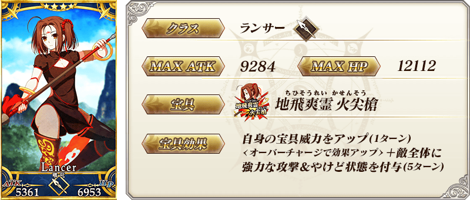
※上述「★4(SR)哪吒」的卡面為靈基再臨第2階段。
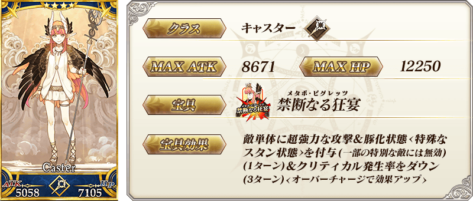
※上述「★4(SR)俄刻阿諾斯的Caster」的卡面為靈基再臨第2階段。

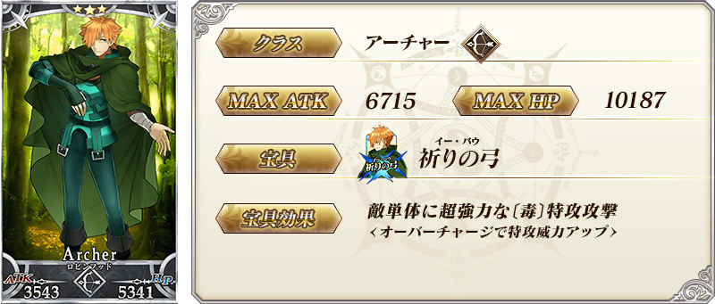
※上述「★3(R)羅賓漢」的卡面為靈基再臨第2階段。
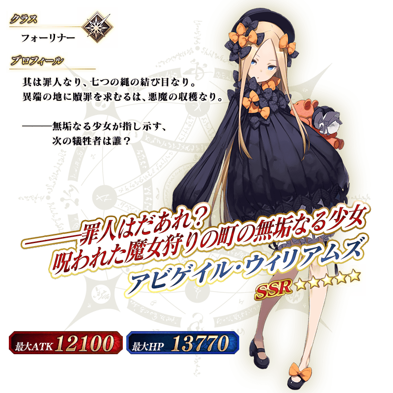
介紹阿比蓋爾・威廉斯、哪吒、俄刻阿諾斯的Caster的寶具演出！
在「Fate/Grand Order」官方網站內的公告中，公開了「★5(SSR)阿比蓋爾・威廉斯」「★4(SR)哪吒」「★4(SR)俄刻阿諾斯的Caster」的寶具演出。敬請確認。
※阿比蓋爾・威廉斯的寶具會根據再臨階段變化演出。